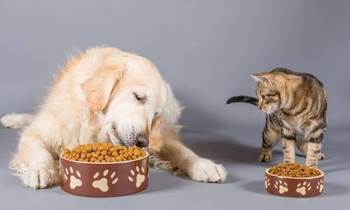
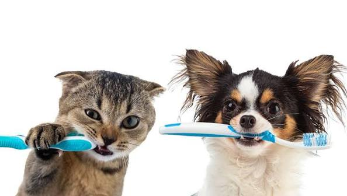
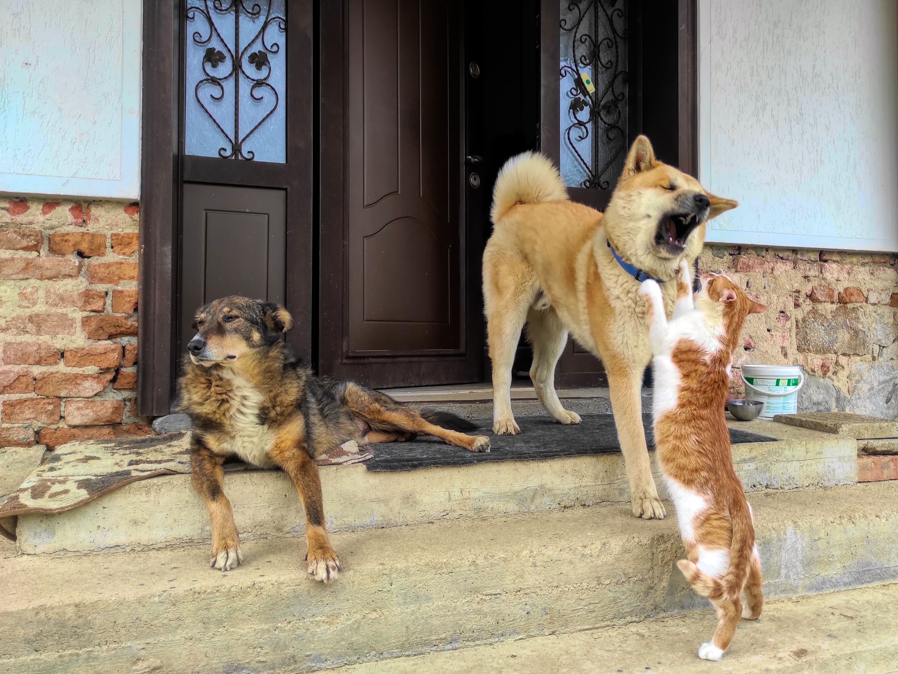
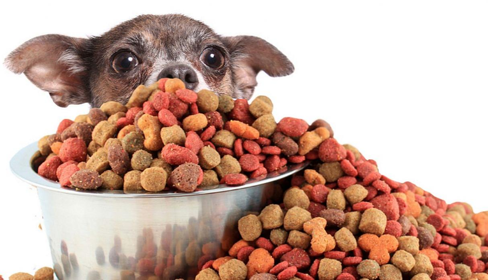

Son vitales porque estimulan sus defensas
y crean protección contra virus y bacterias
graves o mortales, como el parvovirus,
el moquillo o la rabia.

Alimentación
Alimentación saludable para tu mascota
Una buena alimentación es fundamental,
especialmente cuando se mantiene un balance
equilibrado para que tu mascota tenga más
energía y una mejor calidad de vida.

Cuidado
Importancia del cuidado dental en tu mascota
La limpieza dental de tu mascota ayuda
a prevenir enfermedades y mantener una
buena salud oral.
Prevención
¿Cada cuánto debes llevar a tu mascota al veterinario?
Las revisiones permiten detectar problemas
de salud antes de que se conviertan en
enfermedades graves.
Actividad física
La importancia de la actividad física
El ejercicio adecuado ayuda a mantener
a tu mascota activa, saludable y con
un buen estado físico.
Cuidado
Por qué las familias confían en VetSalud
En VetSalud combinamos experiencia, tecnología y un trato
cercano para brindar una atención veterinaria pensada
para el bienestar de cada mascota y su familia.

Prevención
Recursos del propietario
Encuentra consejos prácticos para cuidar mejor a tu mascota,
tomar decisiones responsables y mantenerla sana, feliz y
protegida en cada etapa de su vida.
Salud
Señales de alerta en la salud de tu mascota
Conocer los cambios en el comportamiento y los hábitos
de tu mascota puede ayudarte a detectar a tiempo
posibles problemas de salud.

Alimentación
Cómo elegir una buena alimentación
Elegir correctamente el alimento de tu mascota puede
marcar una gran diferencia en su crecimiento, energía
y bienestar durante cada etapa de su vida.